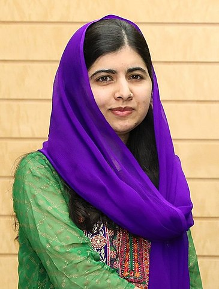

Malala Yousafzai
Malala Yousafzai, born in 1997, is a Pakistani activist and the youngest-ever Nobel Prize laureate. She gained international recognition for her advocacy of girls' education in her native Swat Valley in Khyber Pakhtunkhwa, Pakistan, where the Taliban had banned girls from attending school. Despite facing numerous threats and a near-fatal attack by the Taliban in 2012, Malala emerged as a powerful voice for education and equality, amplifying her message on the global stage.
Malala's courage and determination to fight for girls' education has inspired millions around the world. She co-authored the memoir "I Am Malala" and established the Malala Fund, a non-profit organization that advocates for girls' education and supports projects in several countries. In recognition of her remarkable efforts, Malala received numerous awards and honors, including the Nobel Peace Prize in 2014. Her unwavering commitment to education and activism serves as a powerful reminder of the transformative power of education and the resilience of the human spirit.